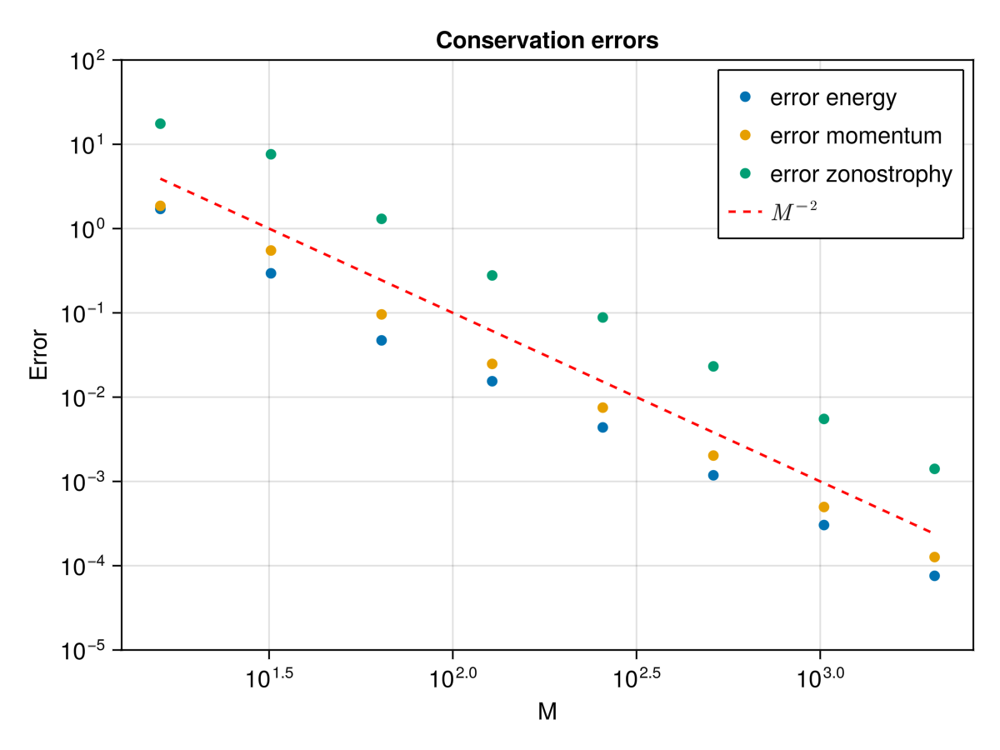
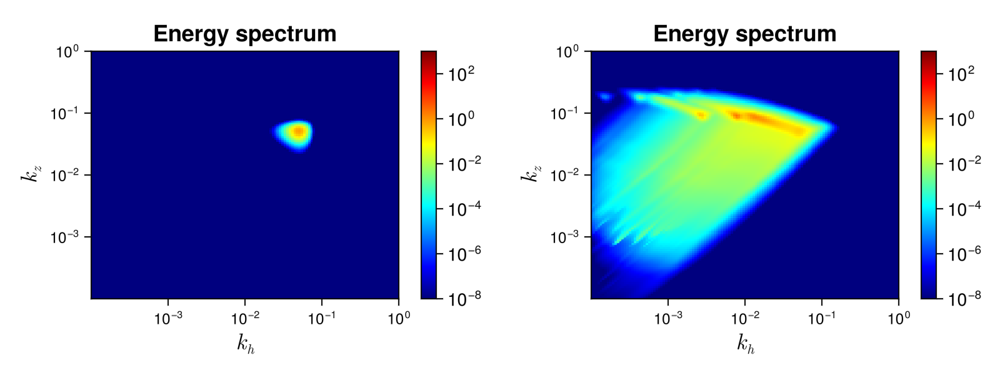

Petviashvilli_Asympsolver
The Petviashvilli equation is an important model describing geophysical flows and fusion plasmas. In particular, it models drift waves in plasmas and Rossby waves in geophysical fluids. For a theoretical application of the WWT to this model, see Nazarenko, Springer, Volume 825 of Lecture Notes in Physics (2011), where the Petviashvilli equation is used as a master example to introduce the theory.
Description
In the solver, we consider the asymptotic Petviashvilli WKE $\dot{n}_{\bf k}=St_{\bf k}$ that explicitly reads
\[St_{\bf k}=\int (\mathcal{R}^{\bf k}_{12}-\mathcal{R}^{1}_{2 {\bf k}}-\mathcal{R}^{2}_{{\bf k}1})\mathrm{d}{\bf k}_1\mathrm{d}{\bf k}_2\]
with $\mathcal{R}^{\bf k}_{12}=2\pi|V_{{\bf k}12}|^2(n_1n_2-n_1n_{\bf k}-n_{\bf k}n_2)\delta({{\bf k}-{\bf k}_1-{\bf k}_2})\delta(\omega_{\bf k}- \omega_1- \omega_2)$ and ${\bf k}=(k_x,k_y)$, with $k_x>0$. In particular, we consider the asymptotic limit $k_x\ll k_y$, for which the interaction coefficient and dispersion relation are
\[\omega_{\bf k}= k_x k_y^2,\quad V_{{\bf 123}}=\frac{1}{2}\sqrt{k_{1x}k_{2x}k_{3x}}\]
This wave kinetic equation conserves the total energy $H$, the potential vorticity $\Omega$ and the zonostrophy $\Phi$
\[H = \int_{k_x>0} \omega_{\bf k} n_{\bf k} d{\bf k},\quad \Omega = \int_{k_x>0} k_x n_{\bf k} d{\bf k},\quad \Phi= \int_{k_x>0} \frac{k_x^3}{k_y^2} n_{\bf k} d{\bf k},\quad\]
Solver
The reduced asymptotic Petviashvilli WKE wave kinetic equation
WavKinS solves the asymptotic Petviashvilli wave kinetic equation making use of the δ-Dirac's. More precisely, it solves the following kinetic equation
\[\dot{n}_{\bf k}=St_{\bf k} =I_{\bf k}-2J_{\bf k}\]
where
\[I_{\bf k}=\int_{-k_y}^0 \frac{\mathcal{R}^{\bf k}_{\bf 12}}{\Delta_{k_y k_{1y}}} dk_{1y} + \int_{k_y}^{2k_y} \frac{\mathcal{R}^{\bf k}_{\bf 12}}{\Delta_{k_y k_{1y}}} dk_{1y}\]
with ${\bf k}_2={\bf k}-{\bf k}_1$, and
\[k_{1x}=k_x\frac{k_{1y}(2k_y-k_{1y})}{k_y(2k_{1y} - k_y)},\quad \Delta_{k_y k_{1y}} = |k_y(2k_{1y}-k_y)|\]
Similarly, the second term is
\[J_{\bf k}=\int_{-\infty}^{-k_y} \frac{\mathcal{R}^{\bf 1}_{\bf k2}}{\Delta_{k_y k_{1y}}} dk_{1y} + \int_{\frac{k_y}{2}}^{k_y} \frac{\mathcal{R}^{\bf 1}_{\bf k2}}{\Delta_{k_y k_{1y}}} dk_{1y}\]
with ${\bf k}_2={\bf k}_1-{\bf k}$ and $k_{1x}$ and $\Delta_{k_y k_{1y}}$ as above. There are not strong divergences in the integrand.
In the integration, we assume $n_{k_x,-k_y}=n_{k_x,k_y}$ and the integral is truncated at $k_{{\rm max}\,y}$. The truncated WKE, exactly conserves the truncated invariants. We use the logarithmic two-dimensional grid wave_spectrum_khkz to represent the waveaction spectrum $n_{\bf k}$.
Note the if we use $M$ nodes to represent each coordinate of the Fourier space, then, the numerical cost of computing the collisional integral is of the order of $M^3$ operations.
Using the Petviashvilli_Asymp solver
As all the other WavKinS solvers, we need to create a Petviashvilli_Asymp structure containing all the fields, working space, diagnostics, etc.
using WavKinS
# Create a waveaction structure containing the basic grid
Mx = 128 # set the number of nodes
My = 128 # set the number of nodes
kxmin = 1e-4 # minimal wave number
kxmax = 1.e-0 # maximal wave number
kymin = 1e-4 # minimal wave number
kymax = 1e-0 # maximal wave number
Nk = wave_spectrum_khkz(kxmin,kxmax,Mx,kymin,kymax,My);
# Creating a Petviashvilli_Asymp structure with default parameters
Run = Petviashvilli_Asymp(Nk);The Petviashvilli_Asymp solver has implemented an option to compute the collisional term as a sink and a source term
\[St_{\bf k} = -\gamma_{\bf k} n_{\bf k} + \eta_{\bf k}\]
The computation of $γ$ and $η$ are performed with the options compute_γk and compute_ηk and accessible as:
# computing collisional integral
St_k!(Run;compute_Sk=true, compute_γk=true, compute_ηk=true)
γ_k = Run.γk
η_k = Run.ηk If both, compute_γk=false and compute_ηk=false, then $St_k$ is computed directly.
The PetviashvilliAsymp solver is compatible with the time stepping `ABEulerstepandAB2RK2_step`, but still under testing.
Diagnostics
Spectral and global quantities can be directly computed using the provided routines (see this tutorial). In addition to the standard diagnostics, the solver computes the total potential enstrophy, zonostrophy, and their respective dissipation. They are stored in
Run.diags.glob_diag["Mx"].out # total potential enstrophy
Run.diags.glob_diag["dMx"].out # total potential enstrophy dissipation
Run.diags.glob_diag["Phi"].out # total zonostrophy
Run.diags.glob_diag["dPhi"].out # total zonostrophy dissipationTesting convergence of the collisional integral
WavKinS provide a simple test of the numerical convergence of the computation of the collisional integral. The testing script is located in /run/tests/physical_systems/tests_Petviashvilli_Asymp.jl.
Theoretically, the collisional integral should conserve the energy, the potential enstrophy and the zonostrophy, which means that
\[\int_{k_x>0} \omega_{\bf k} St_{\bf k} d{\bf k}=0, \quad \int_{k_x>0} kx St_{\bf k} d{\bf k}=0, \int_{k_x>0} \frac{k_x^3}{k_y^2} St_{\bf k} d{\bf k}=0\]
The following numerical test evaluates those integrals and check the convergence to $0$.
using WavKinS
function nk_test(kx) #we define some test function
return abs(ky)^3 * exp(-kx - abs(ky)) * kx^1.5 / (1.0 + abs(ky))
end
for M ∈ 2 .^ (4:6)
Mx = M
My = M
kxmin = 5e-3
kxmax = 5e+3
kymin = 5e-3
kymax = 5e+3
Nk = wave_spectrum_khkz(kxmin, kxmax, Mx, kymin, kymax, My)
Run = Petviashvilli_Asymp(Nk; interp_scheeme=WavKinS.bilin_interp_khkz)
kx = Nk.kkh
ky = Nk.kkz
kk = Nk.kk
KKX = kx .* ones(length(ky))' # we get the two-dimensional mesh
KKY = ones(length(kx)) .* ky' # we get the two-dimensional mesh
@. Nk.nk = nk_test.(KKX, KKY)
WavKinS.St_k!(Run) # compute the collisional integral
get_global_diagnostics!(Run)
Ω = Run.diags.glob_diag["Mx"].out[end] # Total potential enstrophy
Φ= Run.diags.glob_diag["Phi"].out[end] # Total zonostrophy
Ene= Run.diags.glob_diag["H"].out[end] # Total energy
integ = WavKinS.integrate_with_log_bins_khkz()
Flux = wave_spectrum_khkz(kxmin, kxmax, Mx, kymin, kymax, My) #a field to test the convergence
# Check conservation of energy
@. Flux.nk = 2 * Run.Sk.nk * WavKinS.ω_Petviashvilli_Asymp(KKX, KKY)
Sum_Flux_Ene = integrate(integ, Flux)
# Check conservation of pontential entrophy
@. Flux.nk = 2 * Run.Sk.nk * WavKinS.ρ_Potential_Petviashvilli_Asymp(KKX, KKY)
Sum_Flux_Ω = integrate(integ, Flux)
# Check conservation of zonostrophy
@. Flux.nk = 2 * Run.Sk.nk * WavKinS.ρ_zonostrophy_Petviashvilli_Asymp(KKX, KKY)
Sum_Flux_Φ = integrate(integ, Flux)
println("Mx = ", Mx, ", My = ", My, ": sum fluxes E, Ω and Φ: ", Sum_Flux_Ene / Ene, " ", Sum_Flux_Ω / Ω, " ", Sum_Flux_Φ / Φ)
endThe output of this test is
Mx = 16, My = 16: sum fluxes E, Ω and Φ: 1.710268715980057 1.8589880090916744 17.54853293874085
Mx = 32, My = 32: sum fluxes E, Ω and Φ: 0.2945159761052512 0.5493565471964945 7.612825119505001
Mx = 64, My = 64: sum fluxes E, Ω and Φ: 0.047152987403215815 0.09584411074860376 1.3042184389571956
Mx = 128, My = 128: sum fluxes E, Ω and Φ: 0.015444134461320853 0.024791030645795964 0.27800229384109115
Mx = 256, My = 256: sum fluxes E, Ω and Φ: 0.004373987907149068 0.007510845318850708 0.08816734805792001
Mx = 512, My = 512: sum fluxes E, Ω and Φ: 0.001182471464404374 0.002026386307332427 0.02317691111735061
Mx = 1024, My = 1024: sum fluxes E, Ω and Φ: 0.0003036763839915813 0.0004973832086118185 0.005512771277465468
Mx = 2048, My = 2048: sum fluxes E, Ω and Φ: 7.58630402627788e-5 0.00012665788264348718 0.0014091889296611471The solver conserves the invariant well and errors roughly decreases as $M^{-2}$ as displayed in the next figure

Running the Petviashvilii solver
WavKinS provides a ready to use script to obtain out-of-equilibrium steady states of the WKE. The script is similar to the one presented in the tutorial and can be found in /run/simple/RunSimpleEvolution_Petviashvilli.jl. Running the script will generate the following plot

The figure on the left is taken at a very early stage of the simulations where a localised forcing is clearly visible. At a later timed, energy cascades and fill the upper part of the spectral space.
The previous simulation took less than 30 seconds on a 3 GHz 10-Core Intel Xeon W iMac Pro, using 16 cores.
List of structures and methods for Petviashvilli solvers
WavKinS.Petviashvilli — TypePetviashvilliSimulation structure for Petviashvilli wave turbulence It contains
name::String #name of the simulation type
Nk_arguments::Int # Number of arguments of ``n_k``. 1: (fully symetric) , 2: (cylindrical average in 3D or mirror symmetric in 2D), 3: Only mirror symmetric in 3D
ω # Dispersion relation. This is a function of ``k``. It takes `Nk_argument` arguments
Nk::wave_spectrum_khkz #wave action
Sk::wave_spectrum_khkz #collisional integral
F1::wave_spectrum_khkz #working field
FSt::Vector{wave_spectrum} #Array of working fields for multithreading
partition::Vector{Tuple{UnitRange{Int64},UnitRange{Int64}}} #partition for multithreading
# Type of interpolation, integration, and time stepping scheemes
interp_scheeme::Interp_Scheeme
integ_scheeme::Integ_Scheeme
time_stepping::Time_Stepping
# Outputs and diagnostics
diags::diagnostic_container
t::Float64 #current time
dimension::Int # physical dimension of the system
dΩ::Float64 # surface of the unit sphere
FD::force_dissipation # Contains all the terms about force and dissipation.WavKinS.Petviashvilli_Asymp — TypePetviashvilli_AsympSimulation structure for Petviashvilli for 'kx<<ky' wave turbulence. It contains
name::String #name of the simulation type
Nk_arguments::Int # Number of arguments of ``n_k``. 1: (fully symetric) , 2: (cylindrical average in 3D or mirror symmetric in 2D), 3: Only mirror symmetric in 3D
ω # Dispersion relation. This is a function of ``k``. It takes `Nk_argument` arguments
Nk::wave_spectrum_khkz #wave action
Sk::wave_spectrum_khkz #collisional integral
γk::Array{Float64,2} # gamma term of WKE
ηk::Array{Float64,2} # gamma term of WKE
F1::wave_spectrum_khkz #working field
FSt::Vector{wave_spectrum} #Array of working fields for multithreading
FSt1::Vector{wave_spectrum} #Array of working fields for multithreading
FSt2::Vector{wave_spectrum} #Array of working fields for multithreading
partition::Vector{Tuple{UnitRange{Int64},UnitRange{Int64}}} #partition for multithreading
# Type of interpolation, integration, and time stepping scheemes
interp_scheeme::Interp_Scheeme
integ_scheeme::Integ_Scheeme
time_stepping::Time_Stepping
# Outputs and diagnostics
diags::diagnostic_container
t::Float64 #current time
dimension::Int # physical dimension of the system
dΩ::Float64 # surface of the unit sphere
FD::force_dissipation # Contains all the terms about force and dissipation.WavKinS.compute_spectral! — Methodcompute_spectral(Run)Compute and store Petviashvilli_Asymp current spectral quantities
Run: PetviashvilliAsymp or Petviashvilli WavKinS simulation structure containing the wave action ``n{\bf k}``
This routine computes and store in Run.diags.sp_outs the waveaction, energy spectra and their corresponding fluxes.
WavKinS.get_global_diagnostics! — Methodget_global_diagnostics!(Run::Petviashvilli_Asymp)Compute default global diagnostics
Run: PetviashvilliAsymp simulation structure containing the wave action ``n{\bf k}``
This routine computes and store in Run.diags.glob_diag the default diagnostics: The current time, the total waveaction, the total energy, total potential enstrophy, zonostrophy and the corresponding dissipations,
WavKinS.store_spectral! — Methodstore_spectral(Run::Union{Petviashvilli_Asymp,Petviashvilli})Compute and store Petviashvilli_Asymp spectral quantities
Run: PetviashvilliAsymp or Petviashvilli WavKinS simulation structure containing the wave action ``n{\bf k}``
This routine computes and store in Run.diags.sp_store the waveaction, and the energy and waveaction flux spectra.